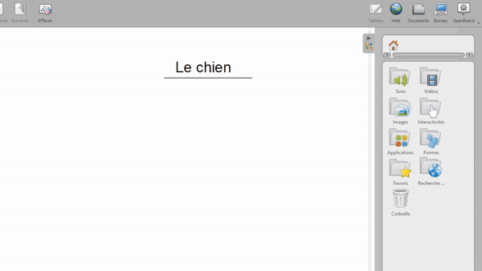

الوصول إلى الصور وتنظيمها
في OpenBoard يمكنك الوصول إلى الصور وإضافتها بطرق مختلفة من خلال المكتبة. تقع المكتبة على الجانب الأيمن من الشاشة، كما يمكنك من خلالها تخزين الأصوات ومقاطع الفيديو والعثورعلى تطبيقات متنوعة.

تنظيم مجلد الصور
تُجمع لقطات الشاشة المضافة إلى المكتبة داخل مجلد
 .
يمكنك إنشاء مجلدات فرعية باستخدام
.
يمكنك إنشاء مجلدات فرعية باستخدام
 (في أسفل المكتبة)، ثم سحب الصور وإفلاتها داخل المجلدات التي أنشأتها.
(في أسفل المكتبة)، ثم سحب الصور وإفلاتها داخل المجلدات التي أنشأتها.

إضافة صور من جهاز الكمبيوتر
يمكنك استيراد ملفات الصور الخاصة بك مباشرة إلى OpenBoard, كما هو موضح أدناه:

إضافة صور من الويب
يمكنك أيضاً البحث عن صور مجانية عبر محركات البحث المدمجة,
المواقع في المجلد البحث في الويب
 .
.
